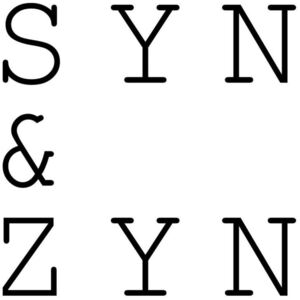

Trade Mark Journal No.2025/038 19 September 2025
WO0000001872776 (3,4,8,11,21,25,30,35)
Office of origin: Morocco
Date of International Registration:20 May 2025
Date of designation in the UK:
20 May 2025

International priority date claimed: 9 December 2024
(Morocco)
(277607)
- Class 3
- Deodorant soaps; brightening soaps; almond soap; soaps for foot perspiration; perfumery, essential oils, cosmetics, hair lotions; dentifrices; cosmetic products for skin care; blush; makeup for the body; chalk for make-up; make-up products; make-up removing products; wipes impregnated with make-up removing preparations; fragrances and incenses, other than perfumes for personal use; massage candles for cosmetic use; balms other than for medical use; hair colorants; bleaching preparations and other substances for laundry use; cleaning, polishing, degreasing and abrasive preparations; false nails; false eyelashes.
- Class 4
- Christmas tree candles; candles [lighting]; tapers; church candles; perfumed candles; industrial oils and greases; waxes; lubricants; dust absorbing, wetting and binding compositions; fuels and illuminants; candles and wicks for lighting.
- Class 8
- Electric or non-electric razors; silver plate [knives, forks and spoons]; scissors; electric or non-electric nail clippers; electric or non-electric depilation apparatus; nail files; nail nippers; hair-removing tweezers; electric or non-electric fingernail polishers; sterile instruments for body piercing; hair dippers for personal use, electric and non-electric; electric apparatus for hair braiding; pedicure sets; manicure sets; hand-operated hand tools and instruments; cutlery, forks and spoons; side arms, other than firearms; razors.
- Class 11
- Hair driers; sterilizers; sauna bath installations; apparatus and installations for lighting, heating, cooling, steam generating, cooking, drying, ventilating, water distribution and sanitary installations.
- Class 21
- Brushes; eyelash brushes; eyebrow brushes; toilet brushes; electric brushes, except parts of machines; make-up brushes; art objects made of porcelain, ceramic, earthenware, terracotta or glass; table plates; window-boxes; towel rails and rings; towel rails and rings; candle rings; soap boxes; tea caddies; boxes of glass; candy boxes; busts of porcelain, ceramic, earthenware, terracotta or glass; cabarets [serving trays]; decanters; candlesticks; candle holders (candlesticks); candelabra [candlesticks]; mugs; ornaments of porcelain; dishes; pottery; salad bowls; soup bowls; sugar bowls; non-electric tajines; teapots; household or kitchen utensils and containers; cooking utensils and tableware, except forks, knives and spoons; combs and sponges; brushes, except paintbrushes; brush-making materials; cleaning material; unworked or semi-worked glass, except building glass; glassware, porcelain and earthenware.
- Class 25
- Babouche slippers; scarves; furs [clothing]; belts [clothing]; underwear; underclothing; embroidered clothing; clothing, footwear, headwear.
- Class 30
- Tea; iced tea; coffee, tea, cocoa and coffee substitutes; rice, pasta and noodles; tapioca and sago; flour and preparations made from cereals; bread, pastry and confectionery products; chocolate; ice cream, sherbets and other edible ices; sugar, honey, golden syrup; yeast, baking powder; salt, seasonings, spices, preserved herbs; vinegar, sauces and other condiments; ice for refreshment.
- Class 35
- Procurement services for others [purchasing goods and services for other businesses]; providing business information via websites; price comparison services; demonstration of goods; provision of online marketplaces for buyers and sellers of goods and services; organization of exhibitions for commercial or advertising purposes; providing commercial information and advice to consumers regarding choice of goods and services; presentation of goods on all communication media, for retail purposes; import-export agency services; commercial information agency services; the bringing together, for the benefit of others, of a variety of goods excluding the transport thereof, enabling customers to conveniently view and purchase those goods; commercial administration of the licensing of third-party goods and services; administration of consumer loyalty programs; advertising; commercial business administration, organization and management; office functions.
AKS HIGH END
Representative: ABDERRAZIK CPI, 4 RUE DE LA BASTILLE,, ETG 5, APPT. 18, RÉSIDENCE MERVET, CASABLANCA, MOROCCO